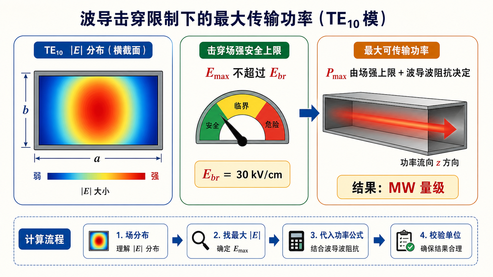

第三次作业（Lec13–Lec16）第 12 题（选做）：击穿场强限制下的最大功率（量级）§
导航： 总目录 · 符号与导读 · Lec10–11 · Lec11～12 · Lec13–Lec16 主册 · 分题 1 · 2 · 3 · 4 · 5 · 6 · 7 · 8 · 9 · 10 · 11 · 12 · 上一题 第11题 · 附录
$\eta_0$ 与 $Z_\mathrm{TE}$ 见教材；峰值/有效场定义与前面系数须与所用教材一致，本解答只给阶次说明。
一、前置知识§
1. 专有名词§
- $E_\mathrm{br}$：介质（此处常取空气）击穿场强，超过则不能再按线性/理想器处理；限制了横截面最大可承受电场。
- $\mathrm{TE}_{10}$ 的 $Z_\mathrm{TE}$：无耗、空气时常写 $\eta_0/\sqrt{1-(f_\mathrm c/f)^2}$，$\eta_0\approx 377\,\Omega$；角色：把功率与场强的等效关系写成与 $a,b$ 有关的式子。
- 峰值功率/平均功率、场取峰值/有效值：教课书公式的常数随定义不同，定稿须以你用的那一版为准。
2. 核心比例（不抄具体常数时）§
- $\,P\,$ 与 $\,E^2\,$、$\,Z\,$、截面积$\,ab\,$ 的量纲与常见比例：$P \sim a b\,E^2\,\!/\!Z$ 量级（精确式含积分/系数）。角色：由 $E\le E_\mathrm{br}$ 得 $P_\mathrm{max}$ 量级为 $\sim 10^6\,\mathrm{W}$ 阶。
二、分析思路§
- 在教材给定的 $\mathrm{TE}_{10}$ 场分布 下，定出横截面最大 $|E|$ 与总功率$P$ 的关系。
- 令 $|E|_\mathrm{max}=E_\mathrm{br}$（或 按教材的等效定义），解出 $P_\mathrm{max}$。
- 代入题给 $E_\mathrm{br}$ 与典型 BJ-100/作业尺寸，只报量级并说明常数依书而定。
三、标准解答§
取 $\mathrm{TE}_{10}$ 无耗时 $\,Z_\mathrm{TE}=\eta_0\big/\sqrt{1-(f_\mathrm c/f)^2}\,$。设 $\,E_\mathrm{br}=30\,\mathrm{kV/cm}=3.0\times 10^6\,\mathrm{V/m}\,$。按教材把 $P$ 与 $E_\mathrm{br}, a, b, Z_\mathrm{TE}$ 联系起来的完整式（与场取峰值/有效、场点位置有关），数值在
$$ \boxed{P_\mathrm{max} \sim 10^6\ \mathrm{W}\ \ \text{（约 }0.8\text{–}1.0\ \mathrm{MW}\text{，依教材系数而定）} }. $$
最终数值要与课堂采用的功率公式、峰值/有效值定义保持一致；本解答给出的是可靠量级与代入路径。
图示§

图：先找到 $\mathrm{TE}_{10}$ 场分布中的最大 $|E|$，再令其不超过击穿场强 $E_\mathrm{br}$。功率上界还要通过 $Z_\mathrm{TE}$ 与横截面积折算，因此本题重点是量级与单位核验。
四、与主册/他题衔接§
- 全册与 BJ-100、$f=10\,\mathrm{GHz}$ 等数值题（如 第2题）可共用 $(f/f_\mathrm c)$ 的 $\,Z_\mathrm{TE}\,$，但功率极限不属必算主链；本题只作选做量级。